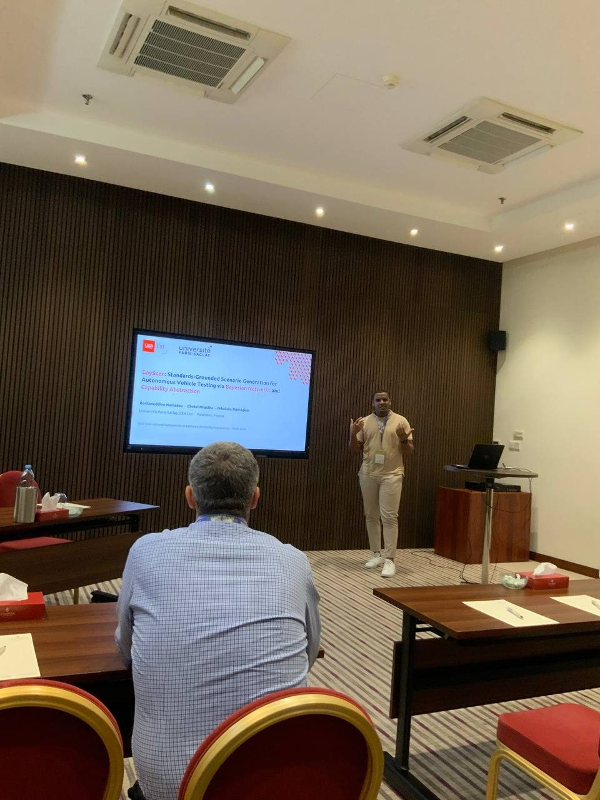

BayScen: Standards-Grounded Scenario Generation for Autonomous Vehicle Testing
Conference presentation of BayScen: how an ISO 34503-grounded capability abstraction makes combinatorial coverage of the operational design domain tractable, while a Bayesian network learned from real-world data keeps the generated scenarios physically plausible.